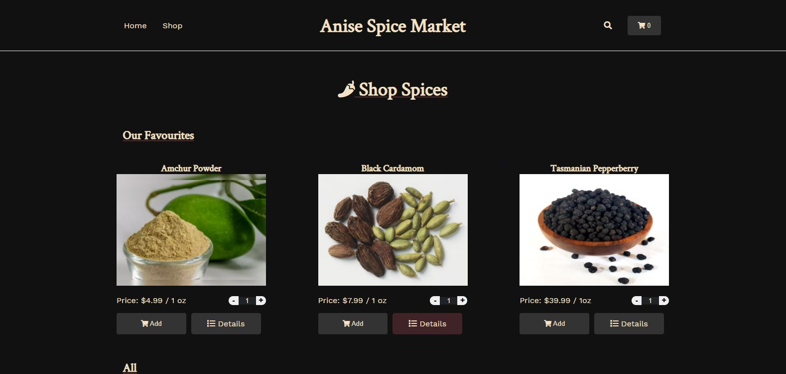
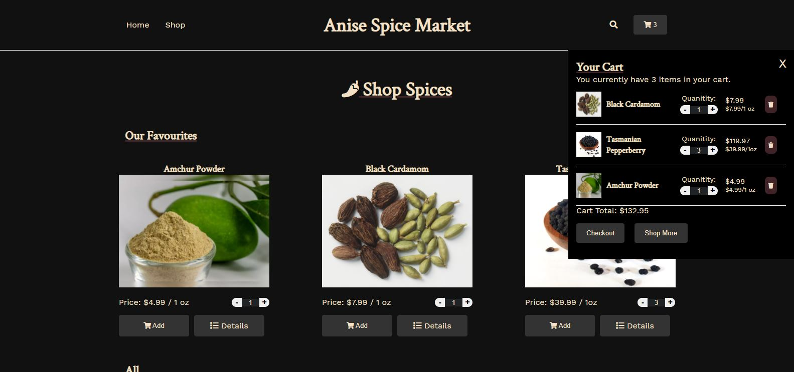
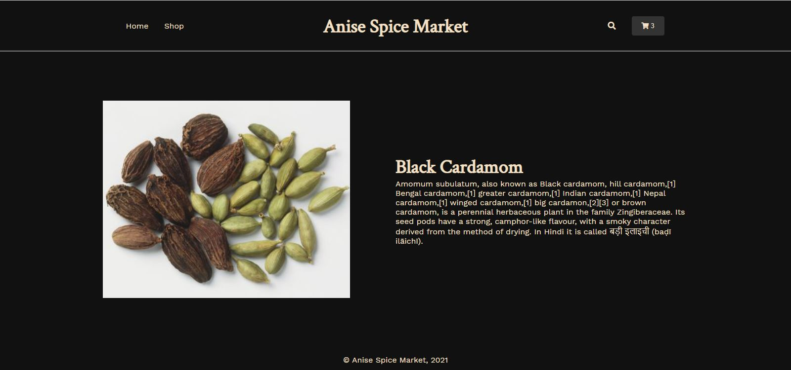

Likely the biggest, or at least most challenging project I've completed in this challenge, today was spent wrapping up the Anise Spice Market project.
Yesterday was a bit of a right off between work and some sudden car issues that came up as soon as I was getting focused. Today was much more productive, and I dove right into styling up the product details pages and adding a bit of placeholder content to fill out the homepage. Overall, I'm pretty happy with the results. I plan to go back and make it fully responsive, refactor and tidy up the code, and possibly add the checkout page using Stripe in days to come, but for now I'm eager to push forward! My plan is to take a full day on Day 50 to revisit projects so far and refactor and tidy up as much as possible. I'm hoping by revisiting these I will have a few projects that I will be inspired to expand the scope of and add as feature works in my portfolio.
Here is a screenshot of the Anise Spice Market's home page:
Here is a screenshot of the Anise Spice Market's shop page:
Here is a screenshot of the Anise Spice Market's product details page:
